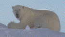

«I have learned to look at nature,
not as in the hour of thoughtless youth;
but hearing oftentimes the still, sad music
of humanity»
W.Wordsworth, 1798
«.....Let us journey to a lonely land I know,
There's a whisper on the night-wind, there's a
star agleam to guide us,
and the wild is calling, calling...let us go!»
Adapted by Fridtjof Nansen, 1928 (orig. Can.poet Servile)
Svalbard is the by far the furthest north in the world it is possible
to take a yacht, beating Alaska and Eastern-Greenland by close to 10
degrees. It will be an optional start, either flying in to Longyear city
(1 h 30 m, from
Tromsø), the first group can have an option to participate as crew for
the navigation from Norway to Svalbard, via Bear Island). The program with
a duration of 14 days, gives us time enough to do an exiting expedition to
the Northeast land, this island that belongs to the most remote areas of the
world. We sail up along the north-western coast of Spitzbergen (main island),
make a visit to Ny-Ålesund, the main research centre of high Arctic studies,
usually filled up with scientists from all over the world in the summer.
We visit some bird colonies in Krossfjord and further all the way up north and over
to the Sorgfjord («sorg» = «sorrow»), named after a disasterful expedition
in the past.
The last group can eventually agree (if some interest) to join a retour via Franz Josefs Land, an archipelago east of Svalbard, at approximately same latitude. That means a return time to Norway of at least 6 days (instead of 3-4).
The price includes the airflights from Oslo <--> Longyear City, an air flight from Longyear city to Ny-Aalesund, as well as all food and gear needed during the expedition.
Telemark ski equipment are recommended and needed!.
Reader's Digest - «Svalbard», / Aschehoug 1992 - «Svalbard vårt nordligste Norge» / Bryan Sage - «Arctic Wildlife» / Susan Barr - «Norway's Polar Territories» / Natur och Samhälle i Norden - «Land i Norr» / Barry Lopez - «Arctic Dreams» / (NPI) (No.29) Horn, Gunnar - «Franz Josef Land Natural history, discovery, exploration and hunting»
Also, Norwegian readers are urged to take a look at Oslonett's online article on Spitzbergen. Others may enjoy the article as well, since it contains many nice photos from Spitzbergen.
![[Oslonett Home]](/graphics/home.gif)
![[Oslonett Marketplace]](/graphics/market.gif)